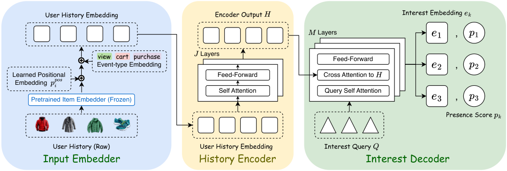
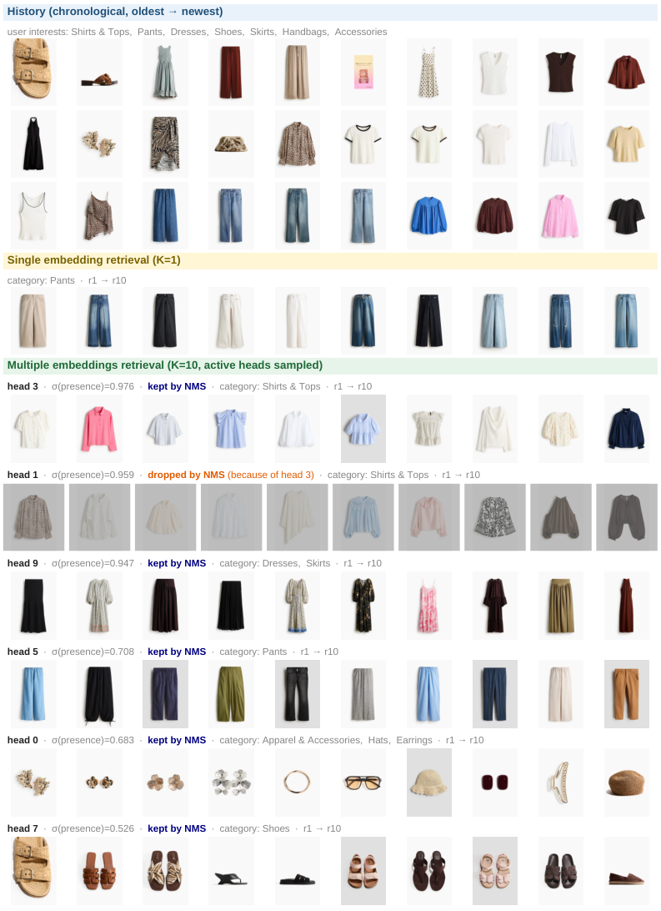

我的判断：做召回的团队值得认真读，尤其是已经在用多兴趣召回、又苦于几个兴趣向量越学越像的团队。它的改动很小，一个训练时的匹配方式和一个输出头，却同时处理了训练和线上两个老问题。来自 Snap 的动态商品广告（DPA，Dynamic Product Ads）团队，已在线上作为新召回源上线。核心思想一句话：用 K 个可学习的兴趣 query 去“预测一个兴趣集合”，没分到真实目标的 query 学会说“这次不存在”，线上据此决定实际发几路 ANN 检索。做法借自目标检测里的 DETR（用一组可学习 query 直接预测目标框集合的检测模型）：训练时用匈牙利匹配把真实目标一对一分给 query。几个数字：把匹配方式从常见的 argmax 换成匈牙利匹配，R@10 差距达 36.5%（argmax 版本只有完整版的 63.5%）；线上平均每次请求只发 6.70 路 ANN，比固定发 10 路少 33%；作为新召回源上线后整体 CVR +3.11%。
它到底在解决什么问题？
先看一个示意场景。一个用户这周看了衬衫、裤子、连衣裙、凉鞋和耳饰。单向量双塔会把这些平均成一个向量，结果往往偏向点得最多的那个品类。论文图 3 的真实案例就是如此：单向量召回的前 10 个全是裤子。
多兴趣召回（MIND、ComiRec 一类）给每个用户输出 K 个向量，每个向量各发一路 ANN 检索再合并。但它们有两个毛病。
第一个叫兴趣坍缩（interest collapse）。常见训练方式是让每个目标商品去找和它最近的那个兴趣向量（argmax），只更新那一个。看一个示意的相似度表：
| 兴趣 query | 目标 1：衬衫 | 目标 2：连衣裙 |
|---|---|---|
| q1 | 0.8 | 0.6 |
| q2 | 0.3 | 0.5 |
| q3 | 0.1 | 0.2 |
按 argmax，两个目标都选 q1（0.8 和 0.6 都是各自那一列的最大值），q2、q3 收不到任何梯度。训下去 q1 什么都管，其他 query 要么不动，要么漂移，最后有效兴趣只剩一两个。论文的消融里，argmax 训练的模型平均只有 2.16 个 query 被判为“存在”。
第二个叫静态派发（static dispatch）。线上不管用户今天有几个兴趣，都固定发 K 路 ANN，每路分 N/K 个候选名额。如果 10 个向量里有 4 个几乎重复，就有 4 路检索在重复取回同一批商品，白白占了候选预算和调用成本。
SetMIR 的出发点是：用户的兴趣是一个大小不定的集合，模型应该预测这个集合，而不是硬造 K 个互相独立的向量。
先看全景

| 阶段 | 做什么 | 为什么需要 |
|---|---|---|
| 输入 | 最近 40 个行为，每个商品用冻结的内容向量，加位置和行为类型 | 商品塔冻结，线上直接复用现成的单向量 ANN 索引 |
| 编码 | 2 层 transformer 读历史 | 得到上下文化的历史表征 |
| 解码 | 10 个 query，6 层解码器，query 之间先互相看、再读历史 | 让 query 在读历史前先“分工”，不去追同一个主信号 |
| 输出 | 每个 query 一个归一化召回向量和一个存在分数 | 存在分数决定线上这路检索发不发 |
| 训练 | 匈牙利匹配 + InfoNCE + 存在损失 + 多样性损失 | 一对一分配目标，未分到的 query 学会说“不存在” |
| 线上 | 存在分数过阈值 → query 去重 → 每路 ANN → 取最大分合并 | 按请求动态决定发几路 |
模型很小，隐藏维 128，可学习参数约 3M。监督信号来自未来 3 天窗口里的高意向行为：购买、加购和上划（swipe-up，Snap 广告里点进商品落地页的动作）。目标按商品去重，同一商品保留最强的行为，最多保留 15 个；窗口之前的最近 40 个行为作为输入。
拆开看：训练时怎么分配目标
匈牙利匹配是什么，为什么能防坍缩？ 匈牙利匹配是一种经典算法：给定一张“query × 目标”的代价表，找出一种一对一的配对，使总代价最小，任何 query、任何目标都不能被用两次。SetMIR 的代价是“负相似度”加一项“负的存在置信度”：
两项权重分别取 1 和 0.5，第二项在前 10% 的训练步里线性升温，让早期的匹配主要由向量几何决定。
回到上面的示意表，先只看相似度。可选的一对一配对里，q1→衬衫、q2→连衣裙 的总相似度是 0.8+0.5=1.3；q1→连衣裙、q2→衬衫 是 0.6+0.3=0.9；q1→衬衫、q3→连衣裙 是 0.8+0.2=1.0。最优是第一种。于是 q2 被迫负责连衣裙，拿到梯度往连衣裙方向走；q3 没分到目标，得到一个“存在 = 0”的标签。这说明匈牙利匹配从训练目标上就保证了“一个兴趣只由一个 query 负责”，不需要额外的正则去硬拉开 query。
分到之后怎么学？ 每对（query，目标）用 InfoNCE 训练：正样本是分到的目标，负样本是同一个 batch 里跨 GPU 收集到的所有目标向量，温度 0.05。没分到的 query 不参与 InfoNCE，不会被拉向任何方向。
存在分数怎么学，为什么需要？ 每个 query 的存在头输出 p_k，标签就是“这次有没有被匹配上”，用二分类交叉熵训练。这是 argmax 训练缺的那块：argmax 下没被选中的 query 什么信号都没有，在 SetMIR 里它会被明确告知“这次不存在”。要注意论文自己的说明：没匹配上只代表未来 3 天窗口里没有更多高意向目标，不代表用户永远没有这个兴趣，所以存在分数是“这次请求要不要发”的调度信号，不是用户画像标签。
多样性损失做什么？ 只对存在分数大于 0.5 的 query 两两计算余弦相似度，超过 0.3 的部分才罚。示意：两个活跃 query 余弦 0.5，罚 0.5−0.3=0.2；余弦 0.2，不罚。已经分开的 query 不受影响。三项损失权重分别是 1.0、0.5、0.1。
拆开看：线上怎么决定发几路
线上只做一次前向，得到 10 组（e_k, p_k），然后三步：
- 存在门控：只保留 p_k > 0.3 的 query；一个都不过就保留分数最高的那个。
- query 去重：按 p_k 从高到低排，如果某个 query 和排在它前面、已保留的 query 余弦超过 0.9，就去掉。这一步论文叫 query 级 NMS（非极大值抑制，目标检测里去掉重复框的做法）。
- 每个剩下的 query 各检索 ⌈N/K̃⌉ 个商品，K̃ 是剩下的路数；同一商品被多路召回时取最高分，再取前 N 个。
手算一个示意例子：5 个 query 的存在分数是 0.95、0.90、0.70、0.25、0.10。门控后剩前 3 个。第 2 个和第 1 个余弦 0.93，超过 0.9，被去掉。最后 K̃=2，假设候选预算 N=1000，每路取 500 个。这说明总召回深度基本不变，省下的是 ANN 调用次数，以及重复检索浪费掉的名额。
这套方案真的更好吗？
离线数据是 Snap DPA 的用户-商品行为日志，商品库数亿，测试集约 100 万用户、530 万个目标商品。按 Snap 的规定只报相对值，下表每列都以 SetMIR 为 100%。所有方法共用同一套冻结商品向量、K=10、同样的优化器和召回预算：
| 方法 | 平均 ANN 路数 | R@1 | R@10 | R@100 | MRR |
|---|---|---|---|---|---|
| MIND | 10 | 45.7% | 52.9% | 61.7% | 44.4% |
| ComiRec-SA | 10 | 67.4% | 89.8% | 99.9% | 80.0% |
| DCM | 10 | 26.0% | 37.4% | 49.3% | 29.1% |
| KuaiFormer | 10 | 43.0% | 52.0% | 62.8% | 42.2% |
| SetMIR（argmax） | 2.16 | 62.1% | 63.5% | 69.1% | 56.4% |
| SetMIR | 6.70 | 100% | 100% | 100% | 100% |
最强的基线 ComiRec-SA 在 R@100 上几乎追平（99.9%），但 R@1 只有 67.4%、MRR 80.0%。这说明它能捞回差不多的候选池，排序却差得多，而下游精排最看重的正是靠前的那部分。最有说服力的一行是 SetMIR（argmax）：结构完全一样，只把匈牙利匹配换成 argmax，R@10 就掉到 63.5%，活跃 query 从 6.70 个降到 2.16 个。KuaiFormer 结构和 SetMIR 最接近，也是 transformer 加可学习 query，R@10 只有 52.0%。这说明差距主要来自 query 怎么被监督，而不是网络结构。
单项消融里，去掉存在损失后 R@10 降到 91.4%，门控还放进了 8.23 路而不是 6.70 路。这说明没有监督的存在分数不携带“该不该发”的信息，结果是发得更多、召回反而更差。去掉多样性损失后 R@10 降到 93.2%，query 之间更相似了。三者中匹配方式的影响最大。
K 的扫描也很有信息量：以 K=1 为 100%，K=3 时 R@10 已到 137.5%，K=10 到 155.0%，K=15 是 155.1%，基本饱和。更有意思的是活跃路数：K=15 时平均也只有 7.59 路被判为存在。这说明有效兴趣的个数是由数据决定的，给更多 query 模型也不会全用。
线上服务的消融用同一个模型、三种派发策略：
| 派发策略 | 平均 ANN 调用 | R@1 | R@10 | MRR |
|---|---|---|---|---|
| 固定发 10 路 | 10.00 | 100% | 100% | 100% |
| + 存在门控（阈值 0.3） | 7.73 | 101.9% | 99.4% | 100.7% |
| + query 去重（阈值 0.9） | 6.70 | 101.8% | 99.2% | 100.7% |
门控砍掉 23% 的调用，R@10 只损失 0.6%，R@1 反而略升，因为低置信 query 召回的候选本来就会稀释合并列表。

线上 A/B 跑了约一周，下游排序模型不变，SetMIR 作为新召回源加入、总召回名额不变。整体 CTR +0.21%、CVR +3.11%。另外在实验组内部按召回源归因，SetMIR 比并行跑的 I2I 召回（直接拿用户最近的高意向商品当种子去 ANN）CTR 高 44%、CVR 高 51%；两者共用同一套商品向量、索引和单路名额，区别只在查询向量怎么来。
我认为它的局限
第一，离线对比对基线不太公平。SetMIR 用冻结商品塔，而 MIND、DCM（用可微聚类构造兴趣向量的多兴趣模型）等本来是和商品塔联合训练的；DCM 和 KuaiFormer 没有公开代码，是作者按论文复现的；训练步数也不同，基线在 6 万到 10 万步收敛，SetMIR 训到 16 万步。作者自己也说 MIND、DCM 的数字只能看作“在冻结商品空间下这些机制的表现”。所以表里 37.4%、52.9% 这类大差距不宜直接当作方法优劣。
第二，线上证据不完整。论文不报流量比例、样本量和显著性；整体 CTR 只 +0.21%，CVR 却 +3.11%，两者差了 15 倍，论文没有解释。44% 和 51% 这组数是实验组内部按召回源归因得来的，不是随机对照，会受精排偏好和召回源之间相互挤占的影响。
第三，存在标签依赖监督窗口。“没匹配上”只表示未来 3 天没有高意向行为，所以窗口一改，存在分数的含义就跟着变。另外目标最多保留 15 个，而 query 只有 10 个，意味着目标多于 10 个的用户一定有目标分不到 query。论文没有做窗口长度或目标上限的敏感性实验。
一个推荐/搜索团队可以怎么试
- 如果已有多兴趣召回，先离线统计 K 个兴趣向量两两的平均余弦，以及每个 query 平均分到多少目标。分布很偏（一两个 query 包揽大部分目标），就说明有坍缩，值得试。
- 最小改动是只换训练时的分配方式：argmax 换成匈牙利匹配，K=10 时每个用户只是一个 10×W 的小问题，算法开销可以忽略。看 R@10 和 MRR 的变化。
- 再加存在头，线上先不改派发，离线按论文的阈值 0.3 和去重阈值 0.9 回放，算 ANN 调用能省多少、召回损失多少。
- 线上 A/B 时，优先看实验组和对照组的整体指标；按召回源归因的指标只作参考，避免把挤占效应当成增益。
- 换监督窗口长度（例如 1 天、3 天、7 天）各训一版，看存在分数和活跃路数是否稳定，确认它适合自己的业务节奏。
一句话结论
多兴趣召回的问题不全在模型结构，更在训练时 query 怎么分目标；SetMIR 用一对一匹配加一个“这次存不存在”的分数，把防坍缩和按请求动态派发合成了一件事，改动小，离线消融和线上效果都支持它。
| 维度 | 评价 |
|---|---|
| 问题重要性 | 高。兴趣坍缩和固定派发是多兴趣召回的普遍问题 |
| 方法创新性 | 中高。DETR 式集合预测在推荐召回里的直接迁移，存在头用于派发是新用法 |
| 实验证据 | 中高。消融干净，有线上 A/B；但基线对比不完全公平，线上缺显著性 |
| 工程成本 | 低。约 3M 参数，商品侧和 ANN 索引不用改 |
| 是否值得尝试 | 值得，尤其是已有多兴趣召回的团队，先换匹配方式 |
| 适用场景 | 用户兴趣分散、品类多的电商和广告召回 |
讨论
欢迎补充实验细节、复现经验或不同看法。需 GitHub 登录。
正在加载讨论…